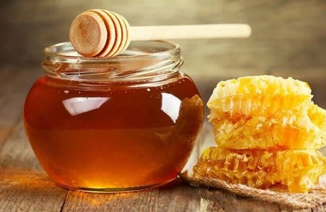
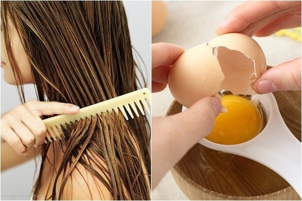

Honey helps retain moisture in the hair, making it more shiny and full of nutrients. After shampooing, apply ½ teaspoon of honey to your hair and gently massage around the scalp. Incubate the hair for 30 minutes and rinse with warm water. Do this process 2 times a week for best results.
Another very effective way, you can mix a little honey with normal conditioner, then apply to hair and rinse with warm water. Honey will help increase the nutrients of the conditioner and make your hair stronger.

Grandparents often have a saying: "The hair is the human body" is not wrong. When you own a beautiful head of hair, you will make a strong impression on the opposite person. Therefore, the best way is to add moisture to your hair. You can use homemade ingredients to incubate your hair such as: avocado, coconut oil, grapefruit essential oil... Thanks to that, your hair will become healthier and smoother.
According to hair experts, for those of you with curly hair, you should moisturize your skin fully. This will help smooth the hair, repel the phenomenon of tangles or split ends. This is one of the simple home remedies for hair care that anyone can do.
Beer is fermented from grains (mostly barley). Contains high protein content, so beer helps strengthen the hair cuticles. Beer also contains vitamin B1, biotin, potassium, and magnesium that help stimulate the growth of hair follicles, making hair longer and thicker.
In eggs, there are many vitamins and nutrients that are beneficial to the hair, helping to effectively nourish the hair. Including such as:
